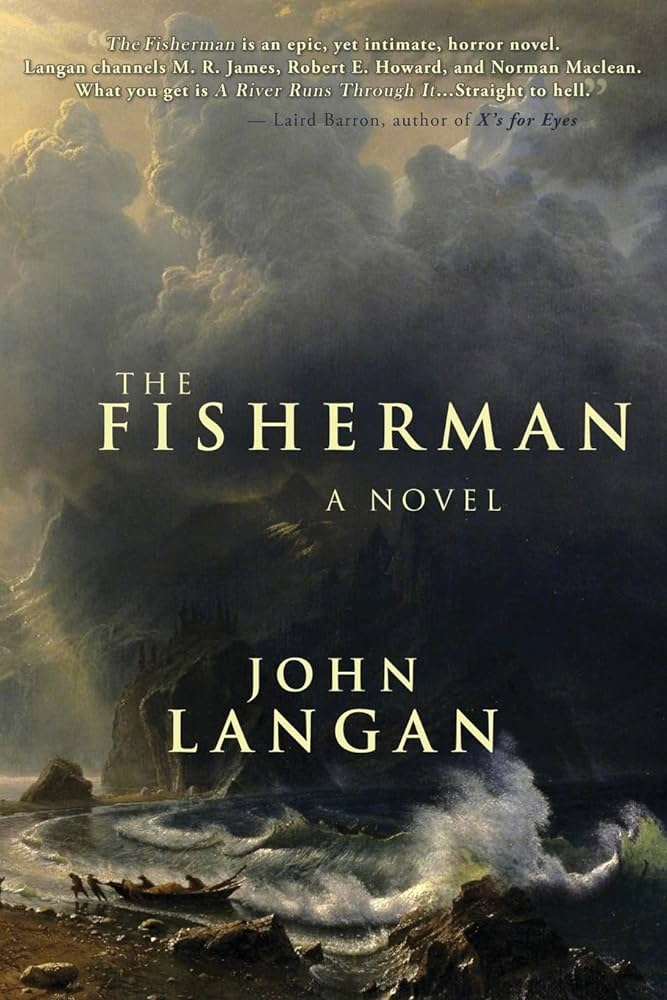

The novel begins with Abraham "Abe" and Dan, who bond over their shared experiences of loss. Both men are struggling to cope with the deaths of their wives and find solace
in fishing. After some time, Dan suggests they explore Dutchman's Creek, a location rumored to have a dark history and the potential to bring back lost loved ones.
As they venture to the creek, they are warned by locals about its dangers but choose to ignore the warnings. Upon arriving, they encounter the Fisherman, an ancient being who
is attempting to catch a primordial creature known as the Leviathan. The Fisherman offers them a choice: assist him in his quest to capture the Leviathan, which could
potentially allow them to reclaim their lost loved ones, or resist him and face dire consequences.
As the story unfolds, Abe and Dan learn about the Fisherman's tragic past, including the horrific events that led to his current state and the toll it has taken on him.
The novel explores deep themes of grief, the human condition, and the nature of reality, revealing how the Fisherman’s quest has affected countless lives over the centuries.
Themes
Grief and Loss: The novel poignantly addresses how individuals cope with the death of loved ones and the lengths they might go to in order to reclaim them.
Cosmic Horror: Langan draws on elements of cosmic horror, emphasizing the insignificance of humanity in the face of ancient, incomprehensible forces.
The Nature of Reality: The story challenges perceptions of reality, suggesting that there are deeper, darker truths beneath the surface of everyday life.
The Fisherman has been praised for its lyrical prose, rich character development, and the way it masterfully blends personal tragedy with supernatural horror. It won the
Bram Stoker Award for Best Novel and is regarded as a significant contribution to contemporary horror literature.